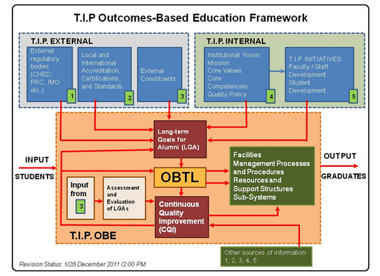

College of Information Technology Education - Quezon City Campus
Outcomes-Based Education
OUTCOMES-BASED EDUCATION (OBE)
The T.I.P. Implementation of outcomes-based education was driven by the following external entities: 1) Regulatory bodies such as the Commission on Higher Education (CHED), the Professional Regulation Commission (PRC), International Maritime Organization (IMO), among others, 2) Local and international accrediting bodies, specifically, the Philippine Association of Colleges and Universities Commission on Accreditation (PACUCOA), the Philippine Technological Council-Accreditation and Certification Board for Engineering and Technology - Engineering Accreditation Commission (PTC - ACBET - EAC), and ABET, Inc., 3) International certifying bodies, and 4) Feedback from other external constituents.
It is also guided by existing T.I.P. internal policies and initiatives: 1) The T.I.P. Vision, Mission, Core Values, and Core Competencies, 2) T.I.P. Quality Policy, and 3) Other T.I.P. initiatives that supported the OBE implementation such as a) the T.I.P. Faculty and Staff Development Program, and b) The T.I.P. Student Development Program.
The institutional outcome statement was formulated based on the T.I.P. graduates attributes. Outcomes at the program level and course level were also formulated aligned with institutional outcomes.
The framework which T.I.P. adopted in its OBTL implementation revolves around three important elements: 1) Intended Learning Outcomes (ILOs), 2) Teaching and Learning Activities (TLAs) and 3) Assessment Tasks (ATs).
In support of T.I.P.’s outcomes-based education and as a strategy to promote academic excellence, T.I.P. has also embarked on a proactive plan to implement outcomes-based teaching and learning or OBTL in all its academic programs using the City University of Hong Kong OBTL model.
The OBE process is also supported by facilities, management processes and procedures resources and support structures sub-systems.
The results of the assessment and evaluation are used as inputs in the continual improvement of the instructional process specifically on the constructive alignment of ILOs, TLAs, and ATs.
It is expected that the implementation of OBTL as part of T.I.P.’s OBE would hasten the realization of T.I.P.’s mission "to transform students into graduates with full competence in their fields of study and who also possess Filipino values, industry-desired values, and global citizen values”.
